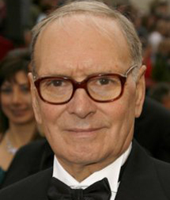

Ennio Morricone

Ennio Morricone was born November 10th, 1928 in Rome. His father, Mario was a respected trumpet player
who played for several small orchestras. Young Ennio started composing at the age of six and was encouraged to
develop his obvious natural talent.
At the age of 12 he enrolled in one of the oldest musical institutions in Rome studying trumpet and composition,
under the tutorage of Geffrado Petrassi, who he would later dedicate some of his compositions to.
While continuing to compose serious classical pieces he was asked to compose a series of medleys in an "American style"
for radio dramas. His background music soon became popular and it wasn't long before he was composing music for cinema.
He became studio arranger for RCA in 1958.
In 1961 he gained his first credit as musical composer for a feature film Luciano Salce's "The Fascist",
having previously ghost written for several well known composers. His connection to Serge Leone's "Spaghetti westerns"
starting in 1964 brought him to a wider international audience.
Morriconne has won many awards for his music and despite being nominated for an academy award 5 times he never won,
but did receive a lifetime achievement award in 2007.